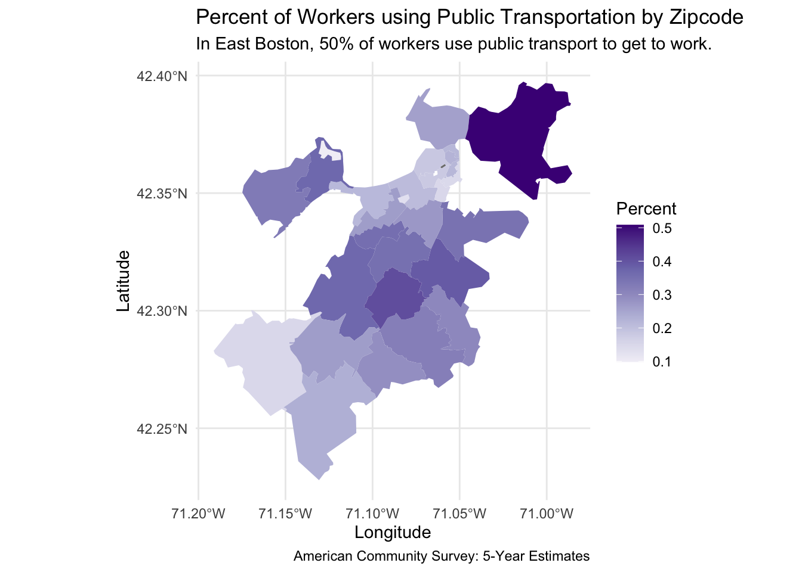
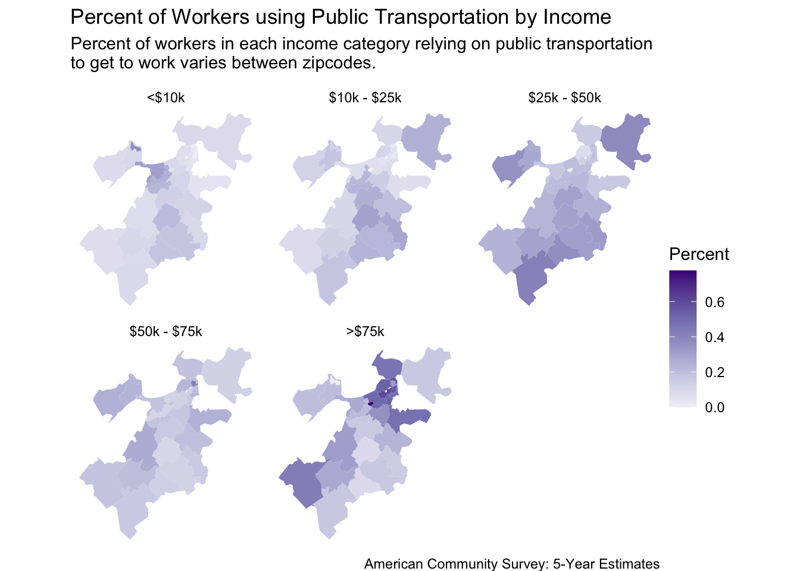
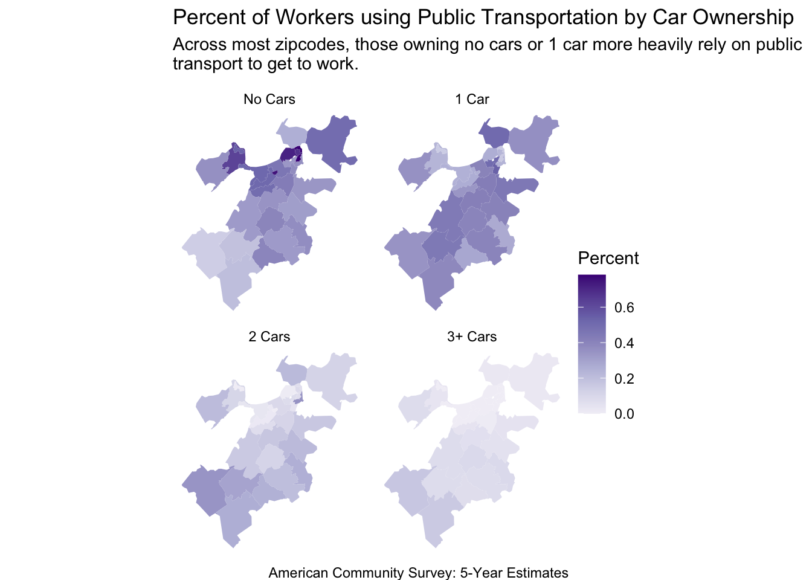
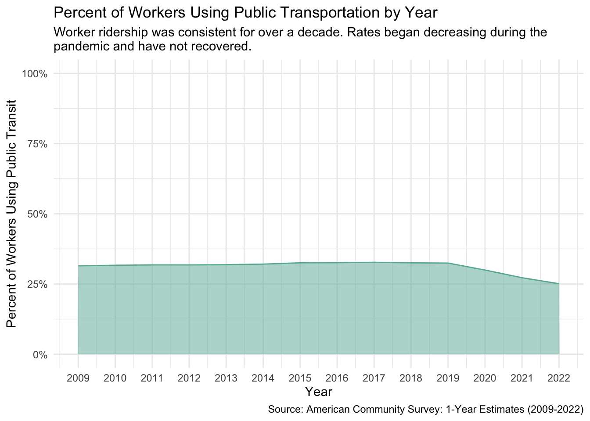
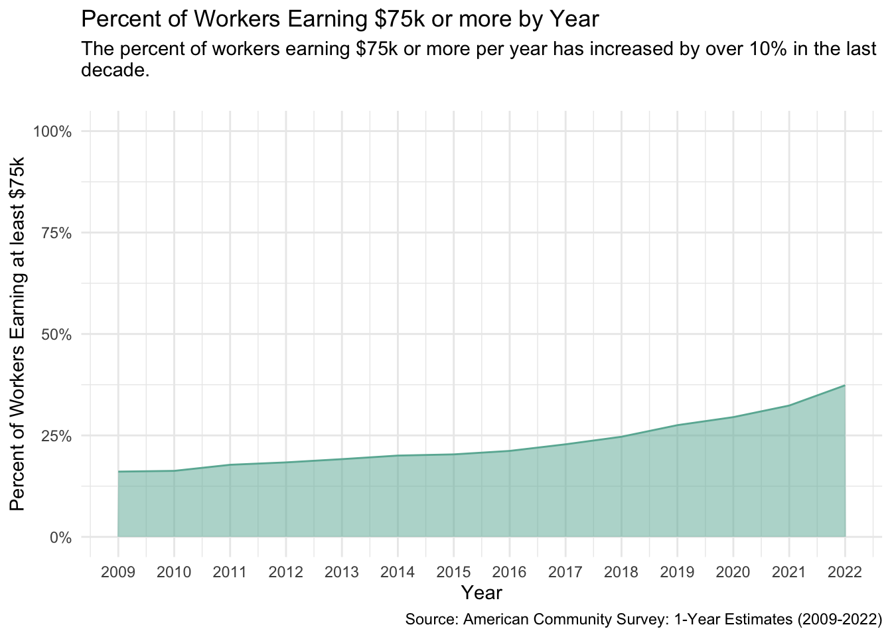

Code
library(tidycensus)
library(tidyverse)
library(RColorBrewer)
library(here)
library(gt)
library(sf)
options(tigris_use_cache = TRUE)
key <- Sys.getenv("CENSUS_API_KEY")
census_api_key(key)With this analysis, I was interested in investigating the use of public transit in Boston, my hometown. The American Community Survey provides extensive data on public transportation use by employed individuals. With these data, I sought to uncover which zip codes in Boston had the most MBTA ridership and how factors such as income and car ownership influenced ridership among the working population. Lastly, I visualized trends in ridership and income in the worker population since 2009.
library(tidycensus)
library(tidyverse)
library(RColorBrewer)
library(here)
library(gt)
library(sf)
options(tigris_use_cache = TRUE)
key <- Sys.getenv("CENSUS_API_KEY")
census_api_key(key)total_working_population <- c("B08301_001E")
total_using_public_transportation <- c("B08301_010E")
by_earnings <- c("B08119_029E","B08119_030E","B08119_031E","B08119_032E","B08119_033E","B08119_034E","B08119_035E","B08119_036E")
by_vehicles <- c("B08141_017E","B08141_018E","B08141_019E","B08141_020E")
vehicles <- c("B08014_002E","B08014_003E","B08014_004E","B08014_005E","B08014_006E","B08014_007")
earnings <- c("B08119_002E","B08119_003E","B08119_004E","B08119_005E","B08119_006E","B08119_007E","B08119_008E","B08119_009E")
variables <- c(total_working_population,total_using_public_transportation,by_earnings,by_vehicles,vehicles,earnings)
if (!dir.exists(here("~/Desktop/data"))) {
dir.create(here("~/Desktop/data"))
}
if (any(!file.exists(here("~/Desktop/data", "ACS_2020_transportation.RDS")))) {
ACS_2020_transportation <- get_acs(
geography = "zcta" ,
variables = variables,
year = 2020,
geometry = TRUE,)
saveRDS(ACS_2020_transportation, file = here("~/Desktop/data","ACS_2020_transportation.RDS"))
} else {ACS_2020_transportation <- readRDS(here("~/Desktop/data","ACS_2020_transportation.RDS"))
}
## filtering for boston zip codes and adding in neighborhoods
public_transit_boston <- ACS_2020_transportation %>%
select(-NAME) %>%
rename(zip_code = GEOID) %>%
mutate(zip_code_dbl = as.double(zip_code)) %>%
filter(zip_code_dbl %in% c(02101:02137, 02163,02199,02203,02205,02208,02209,02215,02222,02228,02283,02284,02455)) %>%
mutate(variable = as_factor(variable),
population = fct_collapse(variable,
total_working_pop = "B08301_001",
"total public transit" = "B08301_010",
"Household: No Cars" = "B08014_002",
"Household: 1 Car" = "B08014_003",
"Household: 2 Cars" = "B08014_004",
"Household: 3+ Cars" = c("B08014_005","B08014_006","B08014_007"),
"public transit: No Cars" = "B08141_017",
"public transit: 1 Car" = "B08141_018",
"public transit: 2 Cars" = "B08141_019",
"public transit: 3+ Cars" = "B08141_020",
"total <$10k" = "B08119_002",
"total $10k - $25k" = c("B08119_003", "B08119_004"),
"total $25k - $50k" = c("B08119_005","B08119_006"),
"total $50k - $75k" = c("B08119_007","B08119_008"),
"total >$75k" = "B08119_009",
"public transit: <$10k" = "B08119_029",
"public transit: $10k - $25k" = c("B08119_030", "B08119_031"),
"public transit: $25k - $50k" = c("B08119_032","B08119_033"),
"public transit: $50k - $75k" = c("B08119_034","B08119_035"),
"public transit: >$75k" = "B08119_036")) boston_public_transit_total <- public_transit_boston %>%
filter(variable %in% c("B08301_001","B08301_010")) %>%
select(-c(moe,population)) %>%
pivot_wider(names_from = "variable", values_from = "estimate") %>%
rename(total_working_pop = "B08301_001",
total_pt = "B08301_010") %>%
mutate(percent_pt = (total_pt/total_working_pop))
boston_public_transit_total %>%
ggplot(aes(fill = percent_pt)) +
geom_sf(color = NA) +
scale_fill_distiller(palette = "Purples", direction = 1, name = "Percent") +
theme_minimal() +
labs(x = "Longitude",
y = "Latitude",
title = "Percent of Workers using Public Transportation by Zipcode",
subtitle = "In East Boston, 50% of workers use public transport to get to work.",
caption = "American Community Survey: 5-Year Estimates")
summary_stats <- public_transit_boston %>%
split(.$population) %>%
map_dfc(~sum(.$estimate)) %>%
rownames_to_column() %>%
pivot_longer(-rowname, names_to="population", values_to="estimate") %>%
select(-rowname) %>%
mutate(p_t = ifelse(grepl("public transit",population),"total public transit population","total working population")) %>%
group_by(p_t) %>%
mutate(percent_total = round(estimate/first(estimate)*100)) %>%
split(.$p_t)
as_tibble(summary_stats[[1]]) %>%
select(population,percent_total,estimate) %>%
filter(population!="total public transit") %>%
rename(Factor = population,
"Percent (%)" = percent_total,
"Estimate (# of people)" = estimate,) %>%
mutate(Factor = str_replace_all(Factor,"public transit: ",ifelse(grepl("\\$",Factor),"Earnings: ","Owns "))) %>%
gt() %>%
tab_spanner(label = "Workers Using Public Transportation",
columns = c(Factor,"Estimate (# of people)","Percent (%)"))| Workers Using Public Transportation | ||
|---|---|---|
| Factor | Estimate (# of people) | Percent (%) |
| Earnings: <$10k | 13349 | 12 |
| Earnings: $10k - $25k | 19758 | 17 |
| Earnings: $25k - $50k | 31749 | 28 |
| Earnings: $50k - $75k | 21135 | 18 |
| Earnings: >$75k | 28899 | 25 |
| Owns No Cars | 44370 | 39 |
| Owns 1 Car | 42953 | 37 |
| Owns 2 Cars | 19050 | 17 |
| Owns 3+ Cars | 6342 | 6 |
by_earnings_noE <- map(by_earnings,~gsub("E$","",.x))
boston_public_transit_total_zip_code <- boston_public_transit_total %>%
group_by(zip_code) %>%
summarize(total_working_pop = sum(total_working_pop),
total_pt = sum(total_pt))
public_transit_boston %>%
as_tibble() %>%
filter(variable %in% by_earnings_noE) %>%
group_by(zip_code,population) %>%
summarize(estimate = sum(estimate)) %>%
mutate(population = str_remove_all(population,"public transit: "),
population = as_factor(population)) %>%
left_join(boston_public_transit_total_zip_code, by="zip_code") %>%
mutate(percent_estimate = ifelse(total_pt==0,0,estimate/total_pt)) %>%
st_as_sf() %>%
ggplot(aes(fill = percent_estimate)) +
facet_wrap("population") +
geom_sf(color = NA) +
scale_fill_distiller(palette = "Purples", direction = 1, name = "Percent") +
theme_void() +
labs(x = "Longitude",
y = "Latitude",
title = "Percent of Workers using Public Transportation by Income",
subtitle = "Percent of workers in each income category relying on public transportation\nto get to work varies between zipcodes.
",
caption = "American Community Survey: 5-Year Estimates") 
by_vehicles_noE <- map(by_vehicles,~gsub("E$","",.x))
public_transit_boston %>%
as_tibble() %>%
filter(variable %in% by_vehicles_noE) %>%
group_by(zip_code,population) %>%
summarize(estimate = sum(estimate)) %>%
mutate(population = str_remove_all(population,"public transit: "),
population = as_factor(population)) %>%
left_join(boston_public_transit_total_zip_code, by="zip_code") %>%
mutate(percent_estimate = ifelse(total_pt==0,0,estimate/total_pt)) %>%
st_as_sf() %>%
ggplot(aes(fill = percent_estimate)) +
facet_wrap("population") +
geom_sf(color = NA) +
scale_fill_distiller(palette = "Purples", direction = 1,name = "Percent") +
theme_void() +
labs(x = "Longitude",
y = "Latitude",
title = "Percent of Workers using Public Transportation by Car Ownership",
subtitle = "Across most zipcodes, those owning no cars or 1 car more heavily rely on public\ntransport to get to work.
",
caption = "American Community Survey: 5-Year Estimates") 
years <- c(2009,2010,2011,2012,2013,2014,2015,2016,2017,2018,2019,2020,2021,2022)
if (any(!file.exists(here("~/Desktop/data", "estimates_years.RDS")))) {
acs <- function(x) {
estimates <- get_acs(geography = "county",
state = "MA",
county = "Suffolk",
variables = c("B08301_010E","B08301_001E"),
year = x)
estimates$year <- x
return(estimates)
}
estimates_years <- map_dfc(years,acs)
saveRDS(estimates_years, file = here("~/Desktop/data","estimates_years.RDS"))
} else {estimates_years <- readRDS(here("~/Desktop/data","estimates_years.RDS"))
}estimates_years %>%
mutate(variable...3 = str_replace(variable...3,"B08301_001","total_working_pop"),
variable...3 = str_replace(variable...3, "B08301_010","total_pt")) %>%
rename(population = variable...3) %>%
select(contains(c("estimate","year","population"))) %>%
pivot_longer(-(population)) %>%
mutate(group = case_when(
grepl("estimate",name) ~ 1,
grepl("year",name) ~ 2)) %>%
filter(group!=2) %>%
cbind(years) %>%
select(-c(group,name)) %>%
pivot_wider(names_from = population) %>%
mutate(percent_transit = total_pt/total_working_pop) %>%
ggplot( aes(x=years, y=percent_transit)) +
geom_area(fill="#69b3a2", alpha=0.5) +
geom_line(color="#69b3a2") +
theme_minimal() +
scale_y_continuous(limits = c(0:1),
label = scales::percent) +
scale_x_continuous(breaks = years) +
labs(x = "Year",
y = "Percent of Workers Using Public Transit",
title = "Percent of Workers Using Public Transportation by Year",
subtitle = "Worker ridership was consistent for over a decade. Rates began decreasing during the\npandemic and have not recovered.",
caption = "Source: American Community Survey: 1-Year Estimates (2009-2022)")
if (any(!file.exists(here("~/Desktop/data", "wealth_years.RDS")))) {
acs_wealth <- function(x) {
estimates <- get_acs(geography = "county",
state = "MA",
county = "Suffolk",
variables = c("B08301_001E","B08119_009E"),
year = x)
estimates$year <- x
return(estimates)
}
wealth_years <- map_dfc(years,acs_wealth)
saveRDS(wealth_years, file = here("~/Desktop/data","wealth_years.RDS"))
} else {wealth_years <- readRDS(here("~/Desktop/data","wealth_years.RDS"))
}wealth_years %>%
mutate(variable...3 = str_replace(variable...3,"B08301_001","total_working_pop"),
variable...3 = str_replace(variable...3, "B08119_009","total_75k")) %>%
rename(population = variable...3) %>%
select(contains(c("estimate","year","population"))) %>%
pivot_longer(-(population)) %>%
mutate(group = case_when(
grepl("estimate",name) ~ 1,
grepl("year",name) ~ 2)) %>%
filter(group!=2) %>%
cbind(years) %>%
select(-c(group,name)) %>%
pivot_wider(names_from = population) %>%
mutate(percent_transit = total_75k/total_working_pop) %>%
ggplot( aes(x=years, y=percent_transit)) +
geom_area(fill="#69b3a2", alpha=0.5) +
geom_line(color="#69b3a2") +
theme_minimal() +
scale_y_continuous(limits = c(0:1),
label = scales::percent) +
scale_x_continuous(breaks = years) +
labs(x = "Year",
y = "Percent of Workers Earning at least $75k",
title = "Percent of Workers Earning $75k or more by Year",
subtitle = "The percent of workers earning $75k or more per year has increased by over 10% in the last\ndecade.
",
caption = "Source: American Community Survey: 1-Year Estimates (2009-2022)")
From this analysis, I learned that East Boston by far has the most workers relying on public transportation to get to work. Surprisingly, those with one car were similar to those with no cars in ridership trends and, despite having a high income, many individuals earning $75k or more per year use public transit.
During the pandemic, ridership among workers went down and has not recovered. In the last few years, the T has experienced severe malfunctions including a fire on the orange line. I believe that a lack of trust in the MBTA and the amount of people still working from home are influencing these trends.
Over the last decade, those earning $75k or more per year has increased, indicating more funds to purchase a car. However, there was no change in the percent of workers owning one car over the time frame (not shown).